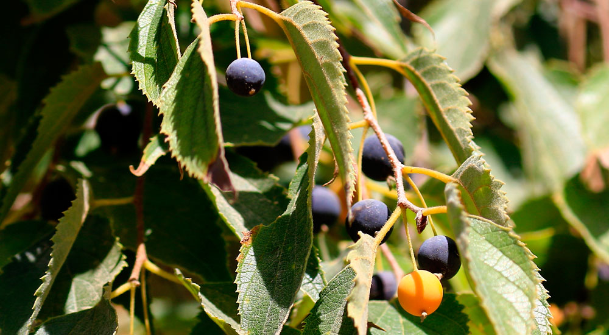

Ayuntamiento de Senés
JARDIN BOTANICO DE ESPECIES AUTOCTONAS DE SENES

Celtis australis

El almez (Celtis australis), también conocido como aligonero o lodón, es un árbol caducifolio característico de regiones mediterráneas. Se distingue por su porte elegante y su copa amplia y redondeada.
Presenta un tronco recto con corteza lisa de color grisáceo. Sus hojas son ovaladas, ligeramente aserradas y de color verde intenso. Produce pequeños frutos redondeados, de color oscuro al madurar, que son consumidos por la fauna.
El almez se distribuye por la región mediterránea, creciendo en zonas de ribera, laderas y terrenos bien drenados. Prefiere suelos profundos y cierta disponibilidad de humedad.
En el entorno de Senés, puede encontrarse en zonas más frescas o cercanas a cursos de agua.
El almez ha sido valorado por su madera, flexible y resistente, utilizada tradicionalmente en la fabricación de herramientas agrícolas y utensilios.
Sus frutos, aunque pequeños, han sido consumidos de forma ocasional y son importantes para la fauna.
El almez simboliza la flexibilidad y la resistencia, debido a la naturaleza de su madera.
También representa la armonía con el entorno natural y la biodiversidad.
En Senés, el almez se conoce como "almecino", ha sido utilizado por la calidad de su madera, especialmente en herramientas como horcas o astiles. Hoy día debido a la sequía escasean, antes eran muy numerosos.
Entre su propiedades, se dice que las hojas y su fruto es intransigente, antidiarreico y alivia los dolores menstruales. La semilla al madurar se pone negra y es comestible, muy dulce, a los niños les encantaban y además los huesos los utilizaban como proyectiles lanzados con canutos de caña, usando la presión de la boca..
Los frutos del almez maduran a finales del verano y en otoño.
La madera del almez ha sido muy apreciada por su resistencia y flexibilidad.
Es un árbol que contribuye a la biodiversidad al servir de alimento a numerosas especies.